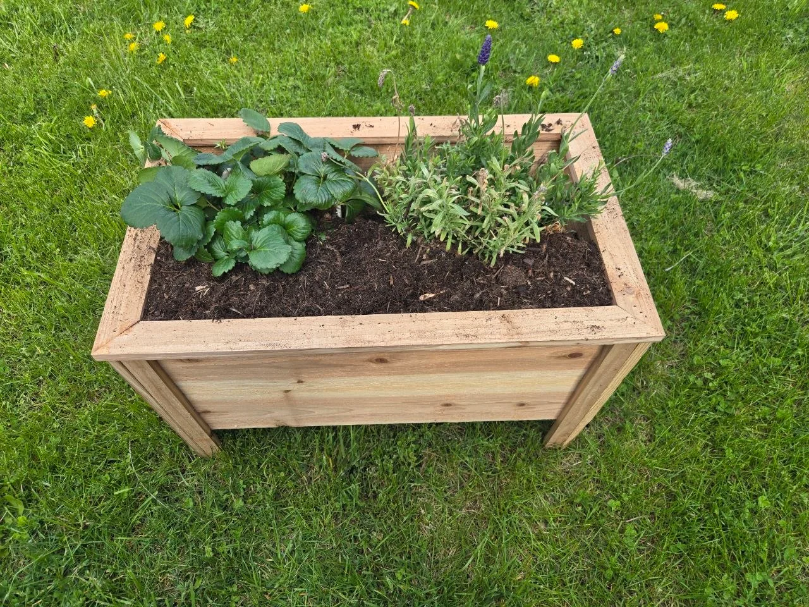

Backyard Projects
Turn Old Lumber Into a Fun Backyard Squirrel Playground
A simple homemade playground that came from paying attention to how much the chipmunks loved the old woodpile.
Read the story ↗Small projects shaped by the place, the plants, and the little visitors.
A simple homemade playground that came from paying attention to how much the chipmunks loved the old woodpile.
Read the story ↗
Turn one $3–$5 cedar fence picket into a charming log cabin-style birdhouse in one afternoon.
Read the story ↗
A fun little cedar fence picket project with rustic charm, real workshop photos, and a finished feeder that looks right at home in a peaceful backyard.
Read the story ↗
A little terracotta, a little trial and error, and a more forgiving way to keep the raised beds watered.
Read the story ↗
DIY Patio Garden Bed
Read the story ↗
This is not meant to be a rigid exact how-to page. It is more of a fun little backyard project, the basic idea, and the kind of simple build that makes a berry patch feel a little more cared for.
Read the story ↗
Tiny Backyard Wildlife Builds
Read the story ↗
A simple in-bed worm composting tube gives your raised bed a place to take in kitchen scraps, build worm activity, and slowly feed the soil over time without making gardening more complicated.
Read the story ↗